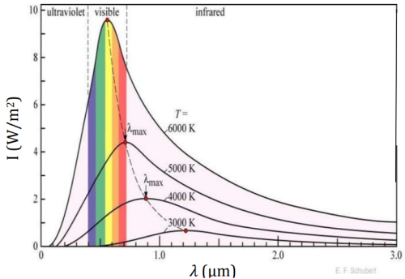
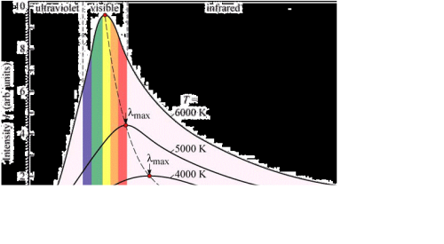
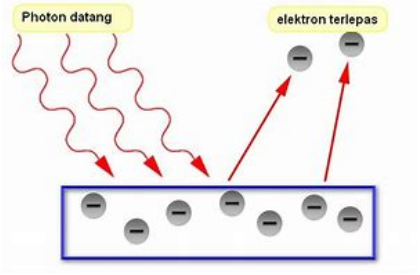
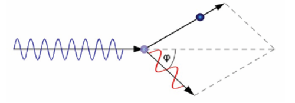

1. Radiasi Benda Hitam
Pada akhir abad ke-19 dengan ditemukannya spektrometer, para ilmuwan fisika dapat mengamati beberapa fenomena fisika yang tidak dapat dijelaskan dengan menggunakan teori fisika yang telah dikenal pada waktu itu. Fenomena itu adalah ditemukannya data hasil eksperimen tentang bentuk kurva radiasi termal dari sebuah benda. Seperti gambar berikut:
Radiasi termal adalah pancaran energi termal suatu benda yang disebabkan oleh suhunya. Sebaran intensitas radiasi termal (I) sebagai fungsi frekuensi (f) atau fungsi panjang gelombang (𝜆) dinamakan spektrum radiasi termal. Berdasarkan pengamatan dengan spektrometer, permukaan benda yang dipanaskan meradiasikan spektrum kontinu (malar) yang nilainya tergantung dari banyak faktor, antara lain: suhu benda, sifat permukaan benda, dan bahan yang dipergunakan.
Sebuah benda yang mampu menyerap seluruh radiasi yang mengenainya disebut dengan benda hitam sempurna. Benda hitam sempurna diibaratkan sebuah rongga dengan lubang kecil yang ketika seberkas cahaya masuk ke dalamnya, cahaya tersebut akan dipantulkan terus menerus di dalamnya dan tidak dapat keluar dari rongga. Benda yang memiliki karakteristik meradiasikan energi dengan intensitas maksimum pada sembarang suhu selanjutnya dinamakan benda hitam (black body). Istilah benda hitam pertama kali diperkenalkan oleh Gustav Kirchoff (1824-1887). Sebuah benda yang mampu menyerap seluruh radiasi yang mengenainya disebut dengan benda hitam sempurna. Benda hitam sempurna diibaratkan sebuah rongga dengan lubang kecil yang ketika seberkas cahaya masuk ke dalamnya, cahaya tersebut akan dipantulkan terus menerus di dalamnya dan tidak dapat keluar dari rongga. Benda hitam didefinisikan sebagai benda yang menyerap semua radiasi yang diterimanya dan meradiasikan seluruh energi yang dimilikinya. Radiasi benda hitam adalah radiasi gelombang elektromagnetik ketika benda berada dalam kesetimbangan termal dengan lingkungannya. Kirchoff membuktikan suatu teorema bahwa setiap benda yang berada dalam kesetimbangan termal memiliki daya radiasi yang dipancarkan sebanding dengan daya yang diserapnya.
2. Hukum Pergeseran Wien
Menjelang akhir abad ke-19, fenomena spektrum cahaya yang dipancarkan oleh benda berpijar masih menjadi pertanyaan mendasar di kalangan ilmuwan. Pengamatan menunjukkan adanya perubahan warna pijar seiring dengan peningkatan suhu; pada temperatur sekitar 1000 K, benda memancarkan warna merah, transisi ke oranye terjadi pada suhu yang lebih tinggi, dan pada suhu yang jauh lebih tinggi, warna pijar mendekati putih. Wilhelm Wien kemudian memberikan penjelasan komprehensif terkait fenomena ini. Beliau mengemukakan bahwa spektrum radiasi benda berpijar bersifat kontinu, namun terdapat suatu panjang gelombang spesifik dalam spektrum tersebut yang memiliki intensitas maksimum. Panjang gelombang dengan intensitas tertinggi inilah yang menentukan persepsi visual warna pijar suatu benda.
Menurut Wien, ada hubungan terbalik antara suhu suatu benda dengan panjang gelombang cahaya yang paling kuat dipancarkannya. Semakin panas benda tersebut, semakin pendek panjang gelombang (atau semakin tinggi frekuensi) cahaya dengan intensitas terbesarnya. Contohnya, besi yang dipanaskan mula-mula akan berwarna merah karena panjang gelombang merah lebih panjang (frekuensinya lebih rendah). Namun, jika terus dipanaskan, warnanya akan bergeser menjadi kuning kemerahan dan akhirnya memijar, karena panjang gelombang kuning lebih pendek (frekuensinya lebih tinggi) dibandingkan merah.
Perubahan warna pada benda yang memancarkan panas itu sebenarnya menunjukkan adanya perubahan dalam seberapa kuat radiasi yang dipancarkannya. Nah, saat suhu benda berubah, intensitas radiasinya juga ikut berubah atau bergeser. Pergeseran inilah yang kemudian dimanfaatkan untuk memperkirakan suhu suatu benda, dan fenomena ini dikenal sebagai Pergeseran Wien.
Grafik di atas memperlihatkan bagaimana intensitas cahaya yang dipancarkan benda hitam berubah-ubah tergantung panjang gelombangnya, dan ini ditunjukkan untuk beberapa suhu yang berbeda. Hal yang menarik di sini adalah, apabila suhu benda hitamnya semakin tinggi, puncak kurvanya (yang menunjukkan panjang gelombang dengan intensitas paling besar, atau max) itu akan bergeser ke arah panjang gelombang yang lebih kecil. Nah, dari hasil eksperimennya, Wien berhasil merumuskan hubungan ini dalam sebuah persamaan
Panjang gelombang maksimum berbanding terbalik dengan suhu absolut.
Rumus: λmaks = b / T
Gunakan simulasi di bawah untuk melihat perubahan spektrum radiasi benda hitam sesuai suhu.
Rumus Hukum Wien:
λmax = b / T, dengan b ≈ 2.897 × 10-3 m·K
3. Teori Kuantum Planck
Teori kuantum Planck adalah sebuah sebuah ide yang dikemukakan oleh Max Planck yang mempresentasikan benda hitam sebagai sejumlah osilator atomik yang masing-masing menyerap dan memancarkan gelombang elektromagnetik. Dalam teori kuantum Planck hipotesis yang dikemukakan adalah energi radiasi yang dipancarkan oleh osilator atomik tidak kontinu melainkan berupa paket energi diskrit.
Energi radiasi bersifat diskret, dalam satuan kuanta: E = h·f
En=nhf dengan n adalah bilangan asli, f adalah frekuensi getaran dan h konstanta Planck, h= 6,63 х 10-34 Js Konstanta Planck adalah konstanta dasar alam yang berfungsi untuk menetapkan batas bawah pada atom. Persamaan E=hf memberikan jumlah energi terkecil yang dapat diubah menjadi cahaya dengan frekuensi f. Radiasi cahaya yang dipancarkan ini tidak secara terus menerus tetapi dipancarkan sebagai paket energi berupa aliran foton dengan masing-masing foton memiliki frekuensi f dan membawa energi hf.
4. Efek Fotolistrik
Akhir abad ke-19, beberapa peneliti memperhatikan bahwa cahaya mampu mengeluarkan elektron dari berbagai permukaan logam. Hal ini terjadi ketika radiasi elektromagnetik dengan frekuensi yang cukup tinggi (panjang gelombang pendek) jatuh pada permukaan logam, maka elektron keluar dari permukaan. Fenomena ini disebut sebagai efek fotolistrik. Fenomena efek fotolistrik ini pertama kali ditemukan oleh Hertz, yaitu bahwa permukaan logam yang bersih ketika disinari oleh cahaya ultraviolet akan memancarkan partikel bermuatan listrik. Penemuan ini bertentangan dengan ide dari maxwell, tetapi memberikan dukungan kepada teori kuantum yang dikemukakan oleh fisikawan Jerman Max Planck (1858-1947).
Efek fotolistrik tidak dapat dipahami dengan fisika klasik, yang menjelaskan bahwa intensitas radiasi sebanding dengan energi gelombang (kuadrat amplitudo). Teori kuantisasi energi yang dikemukakan oleh Planck, kemudian diartikan lebih fisis oleh Einstein digunakan untuk menjelaskan hasil eksperimen dari gejala fotolistrik. Pada tahun 1905 Einstein mulai memperkenalkan teori kuantum cahaya. Menurut Einstein:
1. Pancaran cahaya yang frekuensinya f berisi paket-paket gelombang atau paket-paket energi yang besarnya sama dengan hf yang dinamakan foton. Jumlah foton per satuan luas penampang per satuan waktu sebanding dengan intensitas cahaya, tetapi energi foton tidak bergantung pada intensitas cahaya. Sehingga semakin tinggi intensitas cahaya yang digunakan pada percobaan efek fotolistrik berdampak semakin banyak jumlah elektron yang terpancar ditandai dengan meningkatnya arus fotoelektron yang terukur pada amperemeter.
2. Energi foton hanya bergantung pada frekuensi gelombang cahaya. Menurut postulat Planck, foton-foton yang sampai pada katoda akan diserap sebagai kuantum energi. Ketika elektron menyerap foton, maka elektron memperoleh sejumlah energi yang dibawa foton yaitu sebesar hf. Jika energi yang diterima elektron melebihi energi ikat oleh permukaan logam, sebagian digunakan elektron untuk melepaskan diri dari bahan dan sisanya digunakan untuk bergerak, menjadi energi kinetik elektron. Besarnya energi yang diperlukan oleh elektron untuk melepaskan diri dari logam (melawan energi ikatan logam) disebut fungsi kerja/energi ambang logam (Wo).
Energi kinetik foto-elektron diukur dengan memasang sumber tegangan (beda potensial listrik) pada perangkat eksperimen fotolistrik dengan kutub negatif (-) dihubungkan dengan elektroda positif (anoda). Pada saat telah terjadi efek fotolistrik, dengan mengatur besarnya tegangan listrik gerak elektron yang terpancar dari logam dapat dihentikan, ditandai dengan arus listrik yang terbaca oleh amperemeter menjadi nol. Tegangan listrik yang mampu menghentikan keluarnya elektron dari permukaan logam selanjutnya disebut beda potensial listrik penghenti/stopping voltage (Vo). Ketika foto-elektron terhenti berarti nilai energi kinetiknya sama dengan energi listrik yang dihasilkan oleh sumber tegangan
Elektron dapat keluar dari permukaan logam jika terkena cahaya dengan frekuensi tertentu. Efek fotolistrik adalah peristiwa lepasnya elektron dari permukaan logam akibat penyinaran cahaya. Simulasi berikut menggambarkan hubungan antara frekuensi cahaya dan energi elektron.
Makin tinggi nilai EKmaks makin tinggi besarnya tegangan penghenti Vo agar elektron tidak mengenai kutub elektrodanya (anoda). Nilai Vo ternyata tidak bergantung pada intensitas cahaya yang dikenakan pada permukaan logam, melainkan bergantung pada frekuensi dari cahaya yang digunakan. Makin tinggi frekuensi cahaya yang digunakan, makin besar nilai Vo. Ini menunjukkan bahwa peningkatan frekuensi cahaya berdampak pada meningkatnya energi kinetik foto elektron atau kecepatan geraknya, bukan pada jumlah foto elektron.
Fenomena efek fotolistrik baru bisa dijelaskan secara teoritis dengan benar ketika dianggap bahwa cahaya yang datang pada permukaan logam adalah berupa foton-foton atau partikel partikel. Pada peristiwa lainnya cahaya harus dianggap sebagai gelombang misal pada peristiwa difraksi, refraksi, polarisasi, interferensi, dan lain-lain. Jadi dengan demikian cahaya bersifat bersifat gelomban dan pada peristiwa lain bersifat sebagai partikel, namun kedua sifat itu tidak pernah muncul secara bersamaan artinya kalau tidak gelombang ya sebagai partikel.
5. Efek Compton
Einstein walaupun telah mempublikasikan penjelasannya mengenai efek fotolistrik dengan teori kuantum cahaya pada 1905, teori teori kuantum cahaya baru diterima secara luas pada 1923 setelah Arthur H. Compton menggunakan model kuantum untuk menjelaskan eksperimennya mengenai hamburan sinar -X pada grafit. Saat foton dari sinar-X bertabrakan dengan elektron, foton melepaskan sebagian energinya dan diserap oleh elektron. Panjang gelombang foton meningkat atau frekuensinya menurun setelah bertumbukan. Fenomena ini disebut efek Compton dan dijelaskan dengan persamaan yang menghubungkan kehilangan energi foton dengan sudut hamburan.
Pengurangan frekuensi foton yang dihamburkan adalah bukti mendasar untuk proporsionalitas energi dengan frekuensi cahaya, dan untuk kinematika relativistik elektron. Klein dan Nishina pada 1929 menghitung distribusi sudut hamburan Compton dari elektron bebas dalam salah satu aplikasi pertama elektrodinamika kuantum (QED). Klein-Nishina memberikan probabilitas, penampang diferensial sehingga foton akan dihamburkan ke sudut tertentu. Saat ini, ketika diterapkan pada proses elektromagnetik 50 juta kali lebih energik, prediksi QED tampaknya masih terbukti. Compton menunjukkan beda panjang gelombang cahaya setelah tumbukan λ’ dan panjang gelombang cahaya datang λ berhubungan dengan sudut hamburannya θ. λ’ - λ = h mc (1 - cos θ) Dengan m adalah massa electron (kg) dan c adalah laju cahaya (m/s).
Tabrakan antara foton dan elektron menghasilkan perubahan panjang gelombang cahaya.
6. Dualisme Partikel-Gelombang
Peristiwa efek fotolistrik dan efek Compton tidak dapat dijelaskan dengan teori fisika klasik yang memandang cahaya sebagai gelombang elektromagnetik, tetapi dapat dijelaskan berdasarkan teori kuantum cahaya yang dikemukakan oleh Einstein yang memandang cahaya sebagai partikel (foton).
Fenomena efek fotolistrik membuktikan bahwa cahaya memiliki sifat partikel. Sisi lain, fenomena interferensi menunjukkan bahwa cahaya memiliki sifat gelombang. Dalam fisika klasik ini kontradiktif. Sudut pandang fisika kuantum, cahaya memiliki sifat keduanya baik “seperti gelombang” maupun “seperti partikel” tergantung pada tinjauan eksperimennya.
Berkaitan dengan ini, pada 1923 De Broglie (1892-1987) mengusulkan hipotesis bahwa karena gelombang cahaya dapat menunjukkan perilaku seperti partikel, maka partikel juga dapat menunjukkan perilaku seperti gelombang. De Broglie mengusulkan bahwa semua materi yang bergerak memiliki panjang gelombang yang terkait dengan gerakannya. Sehingga muncul gagasan dualisme gelombang partikel dimana cahaya tidak hanya memiliki sifat sebagai gelombang tetapi juga bersifat seperti partikel. Walaupun foton tidak bermassa, karena dipandang sebagai partikel maka foton memiliki momentum.
Diilhami oleh sifat dualisme cahaya, Louis de Broglie pada tahun 1924 mengusulkan hipotesisnya, bahwa partikel yang bergerak juga memperlihatkan sifatnya sebagai gelombang. Hipotesis de Broglie tersebut kemudian dapat dibuktikan oleh Davisson dan Germer pada tahun 1927 dengan difraksi elektron. Seberkas elektron yang telah dipercepat dengan tegangan V dikenakan pada kristal. Elektron-elektron terhambur dideteksi terhadap variasi sudut hamburan, ternyata hasilnya memperlihatkan adanya pola difraksi seperti halnya cahaya atau sinar X.
7. Sinar-X
Sinar-X adalah bentuk radiasi elektromagnetik dengan panjang gelombang yang sangat pendek (sekitar 0,01 hingga 10 nanometer) dan energi yang tinggi. Sinar-X pertama kali diperkenalkan pada tahun 1895 oleh seorang ilmuwan bernama W. Rontgen. Penemuan sinar ini bermula ketika Rontgen bekerja dalam tabung sinar katoda dan mendapati bahwa terdapat sebuah sinar dari tabung yang dapat menembus bahan opak (tak tembus) terhadap cahaya dan mengaktifkan layar pendar atau foto film. Sinar ini tidak dapat dibelokkan meski berada dalam medan magnetik seperti yang diharapkan jika sinar berupa partikel bermuatan, sinar ini juga tidak dapat diamati interferensi dan difraksinya seperti yang diharapkan jika sinar berupa gelombang. Penyelidikan akan sinar ini terus berlanjut sehingga ditemukan bahwa semua bahan tertembus oleh sinar tersebut dalam derajat tertentu dan derajat ke tembusannya berkurang seiring bertambahnya densitas bahan.
Fenomena terjadinya sinar-x diketahui merupakan kebalikan dari efek foto listrik. Pada efek fotolistrik, foton datang pada permukaan logam lalu dari permukaan tersebut dikeluarkan elektron foto. Pada peristiwa sinar-x, elektron energetik menumbuk permukaan logam dan dari logam tersebut baru lah muncul pancaran sinar-x atau foton foton. Energi kinetik elektron yang menumbuk logam sepenuhnya diubah menjadi energi foton.
Dihasilkan dari tumbukan elektron berenergi tinggi ke logam. Digunakan dalam radiografi medis.
Simulasi berikut menunjukkan bagaimana sinar-X terbentuk dari tabung sinar-X:
8. Penerapan dalam Kehidupan
- Panel surya (efek fotolistrik)
- Radiografi (sinar X)
- Laser medis dan komunikasi optik
🌞 Studi Kasus: Panel Surya
Panel surya bekerja berdasarkan efek fotolistrik, di mana foton cahaya mengenai permukaan material semikonduktor, seperti silikon, dan menyebabkan elektron keluar, menciptakan arus listrik.
Dalam teori kuantum, cahaya bukan hanya gelombang, tapi juga partikel (foton). Setiap foton membawa energi E = hf. Jika energi ini cukup besar (lebih besar dari fungsi kerja material), maka elektron akan terlepas.
Aplikasi nyata: panel surya di rumah, kalkulator, dan satelit menggunakan prinsip ini untuk menghasilkan listrik langsung dari cahaya matahari.
Pertanyaan: Mengapa intensitas cahaya yang tinggi belum tentu menghasilkan arus jika frekuensi cahaya terlalu rendah?
💡 Studi Kasus: Radiologi & Efek Compton
Dalam dunia medis, sinar-X digunakan untuk melihat bagian dalam tubuh manusia. Sinar-X bekerja dengan prinsip gejala kuantum: ketika sinar-X menumbuk jaringan tubuh, sebagian dipantulkan dan sebagian diserap berdasarkan "kepadatan material".
Dalam proses ini, terjadi efek Compton, di mana foton bertumbukan dengan elektron bebas dan mengalami perubahan arah serta energi. Inilah yang memungkinkan pencitraan tulang dan jaringan lunak dalam radiologi.
Aplikasi: foto rontgen, CT Scan, dan bahkan deteksi tumor.
Sinar-x (proses terbentuknya gambar sinar-x)
Efek Compton dalam teleskop sinar gamma
Pertanyaan: Mengapa tulang terlihat lebih terang pada hasil rontgen dibandingkan jaringan lunak?